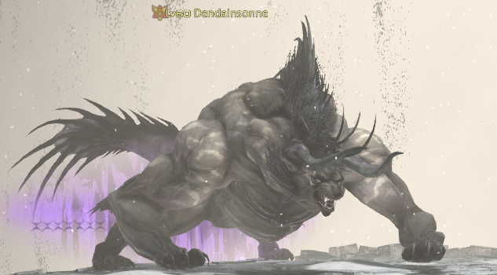

Floor 180 (Boss)
Palace of the Dead • Floors 171–180
Boss: Dendainsonne

| Ability | Potency | Effect |
|---|---|---|
| Thunderbolt |
|
telegraphed conal AoE |
| Charybdis |
|
telegraphed circle AoE on random player that leaves behind a tornado |
| Trounce |
|
large telegraphed conal AoE |
| Ecliptic Meteor |
|
roomwide AoE; medium cast time |
| Maelstrom (tornado) |
|
telegraphed circle AoE of double the tornado's size that draws players in |
| Charybdis (tornado) |
|
used periodically against players inside the tornado |
Notes:
-
Rotation:
- Thunderbolt
- Charybdis (x2)
- Thunderbolt
- Trounce; runs to the south end of the arena to cast this
- Charybdis (x2)
- Thunderbolt
- Charybdis
- Trounce again, but from the north end
- Enters enrage mode at 15% - stands up and casts Ecliptic Meteor, dealing 80% max HP damage to everyone in the party. Continues to cast this over and over until the fight ends
- If you are standing in front of him during meteors, he can also autoattack you (so don't do that!)
- Most jobs require a very strict strategy to get through this final push. See the job-specific notes below
-
Useful macros:
-
Cancel Lust: /statusoff "Transfiguration"
- Useful if you have trouble clicking it off quickly
-
Cancel food: /statusoff "Well Fed"
- Again useful if you have trouble cancelling it quickly otherwise
- Cancelling food is useful during enrage if you're healing through it because Meteors do damage based on your max HP. Lower max HP means less damage taken, which means less damage to heal
- Cancelling your food when not at full HP also acts like a pseudo heal since it lowers your max HP, which actually raises your current HP%
-
Cancel Lust: /statusoff "Transfiguration"
Job Notes & Kill Times
BRD
- Steel required
- Strength required for the final push, so you may as well have it up the entire fight!
- Resolution strategy:Slowly drag him clockwise around the arena, moving a bit each time he uses an ability so you're at the end he's going to Trounce from. This makes Trounce easy to avoid, and tornados are gone before you complete a lapPop lust at 22-23%. Get 5 stacks on the boss, then drop Transfiguration immediatelyBring the boss down as close to 15% as you can and make sure all your skills are off cooldown. Be very careful with DoTs because you want them up, but you don't want them to trigger enrage before you're ready. DoTs will do about 2-3% in the course of a full lap around the map.Pop Wanderer's Minuet a bit earlier (without other skills) so you have 3 stacks for Pitch Perfect at the start of the burstWait for the double Charybidis cast. During the first, pop Resolution, hit the boss once with it, then immediately cancel Resolution and start your burst (standard Minuet rotation/opener)
- Slowly drag him clockwise around the arena, moving a bit each time he uses an ability so you're at the end he's going to Trounce from. This makes Trounce easy to avoid, and tornados are gone before you complete a lap
- Pop lust at 22-23%. Get 5 stacks on the boss, then drop Transfiguration immediately
- Bring the boss down as close to 15% as you can and make sure all your skills are off cooldown. Be very careful with DoTs because you want them up, but you don't want them to trigger enrage before you're ready. DoTs will do about 2-3% in the course of a full lap around the map.
- Pop Wanderer's Minuet a bit earlier (without other skills) so you have 3 stacks for Pitch Perfect at the start of the burst
- Wait for the double Charybidis cast. During the first, pop Resolution, hit the boss once with it, then immediately cancel Resolution and start your burst (standard Minuet rotation/opener)
- Be prepared for multiple attempts. You can play perfectly and still lose this fight. A win requires good luck with Pitch Perfect and Straight Shot procs.
Kill times:
- ~7-8m with strength and 2 lusts - 1 at start and 1 for the final push (6.55)
GNB
- Steel recommended for the later half of the fight to make burst setup easier
- Start the fight by the gate (where he spawns), making sure to spread out the tornados. Follow him across when he goes for Trounce and repeat the pattern there. This part of the fight is easy without steel
- Use strength (and steel if using) at 65% or when 8 minutes are remaining - whichever comes first
- Start saving Aurora, No Mercy, and cartridges around 28%
- Bring him to 19% and hold him there until he's heading north for Trounce. As he does Trounce, use sustaining potion, some mitigation (but NOT Aurora), and Lust. Hit him with lust at least 5 times and more if necessary to get him to around 16.0% HP, then drop Transfiguration immediately
- Damage him slowly to between 15.3 and 15.1%, and then stop damage. You'll start the burst during the double Charybdis cast on the opposite side
- Burst (tincture strat):Make sure to keep Sustainings going until after the third meteorDuring the first Charybdis cast, use strength tincture and No MercyAs soon as the second Charybdis cast starts, begin your burst with Sonic Break into Gnashing Fang comboAfter meteor #1, wait a second, then use Superbolide and AuroraAfter meteor #2, cancel your food buff if you have it. See macro above for cancelling food. This will bring you up high enough to survive meteor #3Kill him before meteor #4!
- Make sure to keep Sustainings going until after the third meteor
- During the first Charybdis cast, use strength tincture and No Mercy
- As soon as the second Charybdis cast starts, begin your burst with Sonic Break into Gnashing Fang combo
- After meteor #1, wait a second, then use Superbolide and Aurora
- After meteor #2, cancel your food buff if you have it. See macro above for cancelling food. This will bring you up high enough to survive meteor #3
- Kill him before meteor #4!
Kill times:
- < 10m with 1 strength and 1 lust (6.15)
MCH
- Steel required
- Strength required for the final push, so you may as well have it up the entire fight!
- Lust also required for the final push
- Keep sustaining pots up 100% and you shouldn't need to use Second Wind or max/super pots until the final push. If you use them, make sure the cooldown is over before starting the push
- There are two main strategies used for the burst phase. These will be detailed below. The first 85% of the fight is the same for both:Slowly drag him clockwise around the arena, moving a bit each time he uses an ability so you're at the end he's going to Trounce from. This makes Trounce easy to avoid, and tornados are gone before you complete a lapStart holding gauges at 30% so they can be full for the burst phaseStop damage at 21%. Wait until after Trounce from the south end, then whenever your Sustaining Potion wears, pop a fresh one, use Tactician, and Lust. Get 5 stacks on the boss, then drop Transfiguration immediatelyDamage him slowly down to 16% and then autoattack only until around 15.2%. Be careful not to hit 15% until you're ready for the burst phaseIf your HP is in good shape, you're now ready to start the burst phase. Choose either the heal or tincture strat below
- Slowly drag him clockwise around the arena, moving a bit each time he uses an ability so you're at the end he's going to Trounce from. This makes Trounce easy to avoid, and tornados are gone before you complete a lap
- Start holding gauges at 30% so they can be full for the burst phase
- Stop damage at 21%. Wait until after Trounce from the south end, then whenever your Sustaining Potion wears, pop a fresh one, use Tactician, and Lust. Get 5 stacks on the boss, then drop Transfiguration immediately
- Damage him slowly down to 16% and then autoattack only until around 15.2%. Be careful not to hit 15% until you're ready for the burst phase
- If your HP is in good shape, you're now ready to start the burst phase. Choose either the heal or tincture strat below
- Heal strat involves healing after the first meteor so you can survive a second one. You must kill the boss before the third meteor hitsMake sure sustaining doesn't drop until the second meteor hits. If it does, use another RIGHT AWAY. You can afford to clip Heat Blast. You cannot afford to miss regen ticksIf you are full HP, wait until the first meteor cast is at 50% before popping another sustaining. This way, you won't need to use anotherWait for a double Charybdis castDuring the first Charybdis:Deploy turretUse ReassembleAs soon as the second Charybdis cast starts, begin your burst. Do not forget to refresh sustaining.There are many variations of this rotation. You have a couple seconds to spare, so it doesn't have to be perfect. This is what I (Daleven) do, and there is plenty of time to spareBurst 1: Drill > Gauss Round > Ricochet > Hot Shot > Wildfire Hypercharge combo > Split ShotHeal: HQ Super Potion > Second Wind. As of Endwalker, cancelling food is no longer necessaryBurst 2: Hypercharge combo > Drill
- Make sure sustaining doesn't drop until the second meteor hits. If it does, use another RIGHT AWAY. You can afford to clip Heat Blast. You cannot afford to miss regen ticksIf you are full HP, wait until the first meteor cast is at 50% before popping another sustaining. This way, you won't need to use another
- If you are full HP, wait until the first meteor cast is at 50% before popping another sustaining. This way, you won't need to use another
- Wait for a double Charybdis cast
- During the first Charybdis:Deploy turretUse Reassemble
- Deploy turret
- Use Reassemble
- As soon as the second Charybdis cast starts, begin your burst. Do not forget to refresh sustaining.There are many variations of this rotation. You have a couple seconds to spare, so it doesn't have to be perfect. This is what I (Daleven) do, and there is plenty of time to spareBurst 1: Drill > Gauss Round > Ricochet > Hot Shot > Wildfire Hypercharge combo > Split ShotHeal: HQ Super Potion > Second Wind. As of Endwalker, cancelling food is no longer necessaryBurst 2: Hypercharge combo > Drill
- There are many variations of this rotation. You have a couple seconds to spare, so it doesn't have to be perfect. This is what I (Daleven) do, and there is plenty of time to spare
- Burst 1: Drill > Gauss Round > Ricochet > Hot Shot > Wildfire Hypercharge combo > Split Shot
- Heal: HQ Super Potion > Second Wind. As of Endwalker, cancelling food is no longer necessary
- Burst 2: Hypercharge combo > Drill
- Tincture strat involves using a HQ Tincture of Dexterity (Grade 4 or higher) instead in order to kill it before the second meteor hits. Note that tinctures share recast timer with health potions, so you cannot use bothBefore you start:Make sure you are almost full HP. Use Second Wind if neededMake sure sustaining is running and fresh enough to take you to full HPUse Tincture (just before Charybdis)During first Charybdis:Deploy turretUse ReassembleAs soon as the second Charybdis cast starts, begin your burst. Rotation:Drill > Wildfire Hypercharge combo > Hot Shot > Ricochet > Hypercharge combo > Drill
- Before you start:Make sure you are almost full HP. Use Second Wind if neededMake sure sustaining is running and fresh enough to take you to full HPUse Tincture (just before Charybdis)
- Make sure you are almost full HP. Use Second Wind if needed
- Make sure sustaining is running and fresh enough to take you to full HP
- Use Tincture (just before Charybdis)
- During first Charybdis:Deploy turretUse Reassemble
- Deploy turret
- Use Reassemble
- As soon as the second Charybdis cast starts, begin your burst. Rotation:Drill > Wildfire Hypercharge combo > Hot Shot > Ricochet > Hypercharge combo > Drill
- Drill > Wildfire Hypercharge combo > Hot Shot > Ricochet > Hypercharge combo > Drill
Kill times:
- 6m30m with strength and 1 lust (6.45)
PCT
Kill times:
- 6m30s with strength and 1 lust (7.16)
PLD
- Steel recommended for the later half of the fight to make burst setup easier
- Start the fight by the gate (where he spawns), making sure to spread out the tornados. Follow him across when he goes for Trounce and repeat the pattern there. This part of the fight is easy without steel
- Bring him to 19% and hold him there until he's heading north for Trounce. As he does Trounce, use sustaining potion, some mitigation, and Lust. Hit him with lust at least 5 times and more if necessary to get him to around 16.0% HP, then drop Transfiguration immediately
- Damage him slowly to 15.2% and then stop damage. You'll start the burst as soon as he starts the second Charybdis cast from the south end
- Burst:The goal is to survive 5 meteors and kill him before the 6thMake sure to use potions and OGCDs (including Hallowed Ground) between GCDs - don't clipMake sure to keep sustaining pots up until after the 5th meteorSave your second Spirits Within for after you cast Clemency so you don't overcap MPDPS rotation will be pretty straight-forward. Fight or Flight as you start the burst. You may need to break a combo for Clemency, but that's okAfter meteor #1, cast Clemency ASAP to get MP tickingUse Hallowed Ground to survive meteor #2Sustaining potion will bring your HP up enough to survive meteor #3. After it hits, cast Clemency twice ASAPAfter meteor #4, heal up with HQ super potion and a Clemency. Also remove food if necessary (not sure)
- The goal is to survive 5 meteors and kill him before the 6th
- Make sure to use potions and OGCDs (including Hallowed Ground) between GCDs - don't clip
- Make sure to keep sustaining pots up until after the 5th meteor
- Save your second Spirits Within for after you cast Clemency so you don't overcap MP
- DPS rotation will be pretty straight-forward. Fight or Flight as you start the burst. You may need to break a combo for Clemency, but that's ok
- After meteor #1, cast Clemency ASAP to get MP ticking
- Use Hallowed Ground to survive meteor #2
- Sustaining potion will bring your HP up enough to survive meteor #3. After it hits, cast Clemency twice ASAP
- After meteor #4, heal up with HQ super potion and a Clemency. Also remove food if necessary (not sure)
Kill times:
- < 11m with 1 strength and 1 lust
RPR
- Strength, steel, and 1 lust required
- Start the fight by the gate (where he spawns), making sure to spread out the tornados. Follow him across when he goes for Trounce and repeat the pattern there
- Use lust at 21-22%, get 5 stacks, drop lust, use auto-attacks to get him between 15.1 and 15.5%, then stop damage
- Start damage again as soon as he starts the second cast of a double Charybdis
- Hold 100% gauge until the first meteor hits, then use Bloodbath and Blood Stalk to heal back up for the second meteor
- You can easily heal up again for the third meteor to be safe, but will probably kill it before
Kill times:
- 7m30s with strength (6.0)
- 6m with strength and 1 lust (7.21)
SGE
- Steel not required, but watch out for crits
- Make sure to keep sustaining potion up during enrage for maximum uptime
Kill times:
- 11m30s with no offensive pomanders (6.28)
- 9m with strength (6.28)
- 8m with strength and 1 lust (6.28)
SMN
Kill times:
- 7m15s with strength and 1 lust (6.0)
WAR
- Steel recommended for the later half of the fight to make burst setup easier
- Start the fight by the gate (where he spawns), making sure to spread out the tornados. Follow him across when he goes for Trounce and repeat the pattern there. This part of the fight is easy without steel
- Use strength (and steel if using) at 60% or when 8 minutes are remaining - whichever comes first
- Start holding gauge at 28%
- Bring him to 20% and hold him there until he's running across for Trounce. As he does Trounce, use sustaining potion, some mitigation, and Lust. Hit him with lust 5 times, then drop Transfiguration immediately
- Damage him slowly to 15.4%, getting Surging Tempest up, and then stop damage. You'll start the burst as soon as he starts the second Charybdis cast on the opposite side
- Burst (super pot strat):Make sure to keep Sustainings going until after the third meteorBerserk and unload your gauge immediately when the second Charybdis cast startsAfter meteor #1, use Raw Instinct and Thrill of Battle, and cancel Thrill of Battle (you want the heal, but not the increased max HP). Macro: /statusoff "Thrill of Battle"After meteor #2, use Equilibrium and HQ Super PotUse Holmgang to survive meteor #4Kill before meteor #5!
- Make sure to keep Sustainings going until after the third meteor
- Berserk and unload your gauge immediately when the second Charybdis cast starts
- After meteor #1, use Raw Instinct and Thrill of Battle, and cancel Thrill of Battle (you want the heal, but not the increased max HP). Macro: /statusoff "Thrill of Battle"
- After meteor #2, use Equilibrium and HQ Super Pot
- Use Holmgang to survive meteor #4
- Kill before meteor #5!
- Another option is to use a strength tincture instead of super potion. This involves relying on Raw Instinct and Sustaining Potion alone to heal after one meteor, and then Thrill and Equilibrium for another.
Kill times:
- < 11m with 1 strength and 1 lust